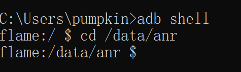
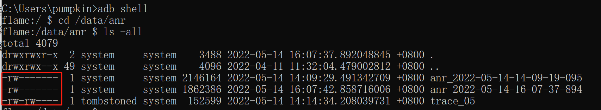
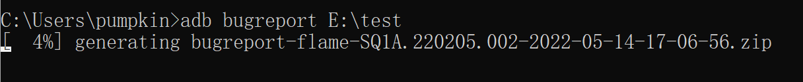
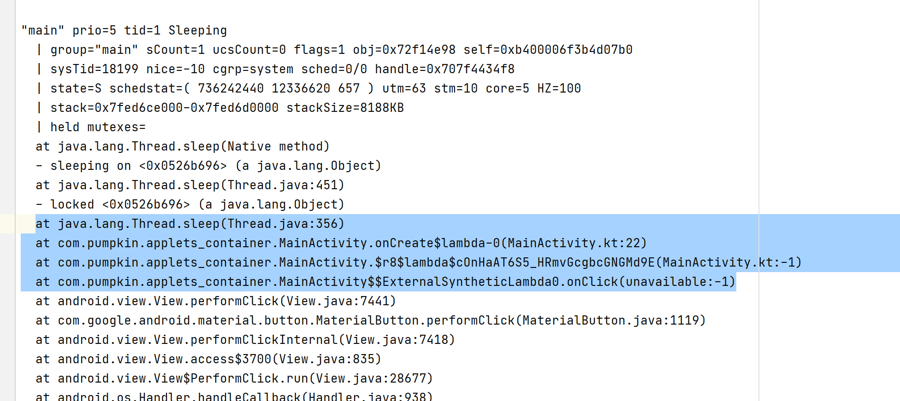

Android ANR排查调试浅记
目的
脑子不行，简单记录一下，方便以后出问题后的快速定位。
如何从手机中导出ANR日志？
老系统日志导出
在老版本系统（Android8.1以下）的手机上，可以直接利用adb pull /data/anr/traces.txt 命令进行日志导出。
新系统日志导出
无法通过adb pull直接导出
但是目前主流的系统是无法通过以上的方式导出的。
比如我需要导出/data/anr/anr_2022-05-14-14-09-19-095这个文件，用adb pull /data/anr/anr_2022-05-14-14-09-19-095命令。
此时会提示adb: error: failed to copy '/data/anr/anr_2022-05-14-14-09-19-095' to '.\anr_2022-05-14-14-09-19-095': remote open failed: Permission denied。
哈？ 其实就是提示权限不足。
为什么无法导出
其实核心原因还是Google对于储存权限的控制改动。我们可以利用adb shell看一下上述anr文件的权限。
通过adb shell进入shell界面，并输入cd /data/anr/切换到/data/anr目录下。

输入ls -all查看目录下的文件以及权限

看得出anr文件所属用户为system，文件所属用户组也为system。
Linux的权限控制，前面有10个字符，第一个用来表示当前是否是目录，如果是d则代表目录，文件则是-；而后面9个字符则表示权限，分为所属用户权限（前三个）、所属用户组权限（中间三个）、其他人权限（后三个）。
其中三个字符分别是r、w、x。分别表示读、写、执行。
所以我们看到两个anr日志权限为rw-------，代表只有system用户才有读写的写的权限，所以我们肯定是拉不出来的。
通过bugreport进行日志导出
那怎么导出呢？
我们可以通过adb bugreport [导出目录]进行导出，这个会导出一大堆东西。比如在控制台执行adb bugreport E:\test ，他会从手机中导出一个zip包到电脑的E:\test目录，会有导出进度显示：

导出完成：

随后找到导出的文件，解压缩，在/FS/data/anr目录下可以找到我们在adb shell中看到的日志。

ANR分析
准备
项目的anr这里就不单独拿出来分析了，这里写一个简单的例子，然后进行一波分析。
写一个按钮，然后在点击事件里面将主线程sleep10秒钟。
findViewById<Button>(R.id.bt_sleep_main).setOnClickListener { // TEST ANR 模拟 Thread.sleep(10000)}操作，连续点击按钮两次，等待一会就会存在应用无响应弹窗了。
分析
分析控制台log日志，如下所示：
xxxxxxxxxx2022-05-14 16:07:42.898 1780-28016/? E/ActivityManager: ANR in com.pumpkin.applets_container (com.pumpkin.applets_container/.MainActivity)PID: 18683//原因：输入分发延迟等待5.002秒之后仍无响应Reason: Input dispatching timed out (78bcb7 com.pumpkin.applets_container/com.pumpkin.applets_container.MainActivity (server) is not responding. Waited 5002ms for MotionEvent)Parent: com.pumpkin.applets_container/.MainActivityFrozen: falseLoad: 5.84 / 4.81 / 3.66----- Output from /proc/pressure/memory -----some avg10=1.11 avg60=2.27 avg300=2.52 total=7017135040full avg10=0.18 avg60=0.63 avg300=0.69 total=2298220772----- End output from /proc/pressure/memory -----CPU usage from 0ms to 5542ms later (2022-05-14 16:07:37.321 to 2022-05-14 16:07:42.863) with 99% awake:42% 1780/system_server: 18% user + 23% kernel / faults: 9079 minor 896 major33% 27986/com.google.android.youtube: 22% user + 11% kernel / faults: 17833 minor 457 major30% 143/kswapd0: 0% user + 30% kernel...在这里很明显可以看出是由于输入事件在5秒钟之后依旧没有被消费导致的。
接下来分析导出来的
ANR日志
通过
anr日志可以很明显看到主线程堆栈信息，就是在主线程点击事件lambda中触发的sleep。
总结
简单梳理了anr后崩溃日志导出的方式，并给了简单的anr分析思路，当然实际上肯定没有这么简单，那就需要结合实际情况进行实际分析了。